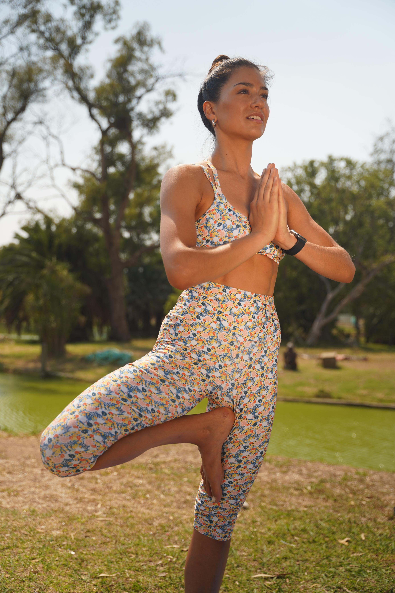

Chi Sono
Sono Maria Guillermina Hendriksen, una fisioterapista appassionata e istruttrice di Yoga con diversi anni di esperienza, maturata fin dalla laurea, nel campo del recupero funzionale e del benessere psicofisico.
La mia missione è aiutare le persone a ritrovare l'equilibrio tra corpo e mente, superare il dolore e migliorare la qualità della loro vita attraverso un approccio integrato e personalizzato.
Formazione e Filosofia
Ho conseguito la laurea in Fisioterapia presso l'Università Cattolica di La Plata (UCLP) e ho approfondito le mie conoscenze con corsi di specializzazione in Terapia Manuale e Riabilitazione Funzionale. Parallelamente, ho coltivato la mia passione per lo Yoga, ottenendo la certificazione come Istruttrice Professionale di Yoga presso la Federazione Argentina di Yoga.
Credo fermamente nell'unione tra la scienza della fisioterapia e la pratica millenaria dello Yoga. Questo mi permette di offrire trattamenti che non si limitano a curare il sintomo, ma mirano a comprenderne la causa e a promuovere uno stile di vita più sano e consapevole.
Valori
- Ascolto Attento: Ogni persona è unica, dedico tempo a comprendere le tue esigenze specifiche.
- Approccio Olistico: Considero la persona nella sua interezza: corpo, mente ed emozioni.
- Professionalità e Aggiornamento: Mi impegno in una formazione continua per offrirti le tecniche più efficaci.
- Empatia e Supporto: Ti accompagno nel tuo percorso con dedizione e incoraggiamento.